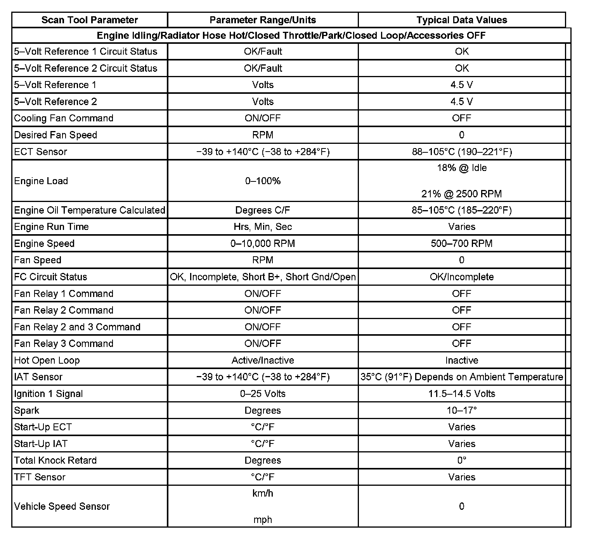

Scan Tool Data List
Scan Tool Data List (V8)
The Scan Tool Data List contains all engine cooling related parameters that are available on the scan tool. The list is arranged in alphabetical order. A given parameter may appear more than once, or in more than one data list in order to group certain related parameters together.
Use the Scan Tool Data List only after the following is determined:
^ The Diagnostic System Check - Vehicle is completed.
^ No diagnostic trouble codes (DTCs)
^ On-board diagnostics are functioning properly.
Scan tool values from a properly cooling system may be used for comparison with the system you are diagnosing. The Scan Tool Data List represents values that would be seen on a normal cooling system.
Important: A scan tool that displays faulty data should not be used. The scan tool problem should be reported to the manufacturer. Use of a faulty scan tool can result in misdiagnosis and unnecessary parts replacement.
Only the parameters listed below are referenced in this service manual for use in diagnosis. If all values are within the typical range described below, refer to Symptoms - Engine Cooling for diagnosis. Symptom Related Diagnostic Procedures
The column labeled Data List indicates where a parameter can be located on the scan tool. Refer to the scan tool operating manual for the exact locations of the data lists. The following is a description of each term listed:
